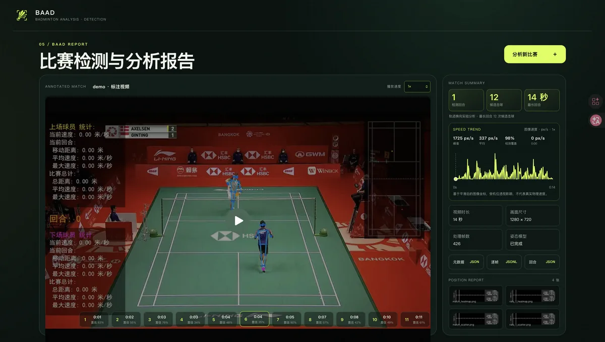
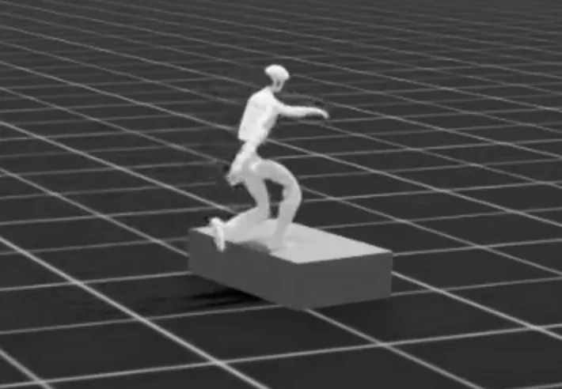

01
基于知识图谱的运动处方智能体
zhukeahyew.top/ETA基于知识图谱构建运动处方智能体，连接训练知识、个体状态与建议生成。
摘要
运动处方的生成需要同时考虑训练知识、个体状态与现实约束。本项目以知识图谱组织动作、训练变量与运动员状态之间的关系，并在此基础上构建智能体，探索可解释、可个性化的处方建议生成流程。本人主要负责知识建模，以及图谱检索与建议生成之间的衔接。
我是上海交通大学 2024 级运动训练专业本科生，我的研究聚焦于 AI4Sport。作为国家一级羽毛球运动员，我拥有 15 年运动经历，并在 2024 年获得全国冠军并以第一名的成绩考入上海交通大学，现在作为上海交通大学高水平队主力队员继续征战各级比赛。
未来，我计划在上海交通大学继续直博深造，致力于 AI 在体育方向的应用研究。希望让体育运动更加科学、具有可解释性。
如果感兴趣，请随时 联系我。
基于知识图谱构建运动处方智能体，连接训练知识、个体状态与建议生成。
运动处方的生成需要同时考虑训练知识、个体状态与现实约束。本项目以知识图谱组织动作、训练变量与运动员状态之间的关系，并在此基础上构建智能体，探索可解释、可个性化的处方建议生成流程。本人主要负责知识建模，以及图谱检索与建议生成之间的衔接。

将标准击球动作转化为可学习、可评估的动作模型，探索强化学习在运动训练中的应用。
把标准击球动作表示为可学习、可评估的模型，是运动训练与强化学习交叉的核心问题。本项目尝试将专业运动员的击球动作转化为可量化的动作表征，并借助强化学习方法探索动作质量评估与训练反馈的自动化路径。

负责教师策略与学生策略框架搭建，探索复杂环境中的技能迁移。
面向复杂、非结构化环境，研究人形机器人在多技能条件下的感知与控制问题。本人负责教师策略与学生策略框架的搭建，探索技能之间的迁移与协同。
推进多模态交互、任务理解与机器人助手系统设计。
围绕多模态交互与任务理解，设计能够响应语音、视觉等多源输入的助手机器人系统。作为第一主持人，负责项目整体设计、任务分工与多模态交互模块的推进。
围绕智能出行场景进行系统设计与协同开发，担任项目组组长。
围绕智能出行场景进行系统需求分析与协同开发，探索出行信息的智能组织与推荐。担任项目组组长，负责需求梳理、任务拆分与项目进度推进。
围绕羽毛球视频与训练数据构建分析能力，为动作理解和训练反馈提供技术支持。
围绕羽毛球视频与训练数据构建分析能力，为动作理解与训练反馈提供技术支持。该项目是长期推进的 AI4Sport 研究方向，也是后续动作建模与处方智能体工作的基础。
上海交通大学 Shanghai Jiao Tong University
运动训练专业
计算机科学与技术辅修
欢迎合作交流👏
Email：zhukeahyew@sjtu.edu.cn
GitHub：github.com/ZHUKEAHYEW
小红书：小红书
抖音：抖音